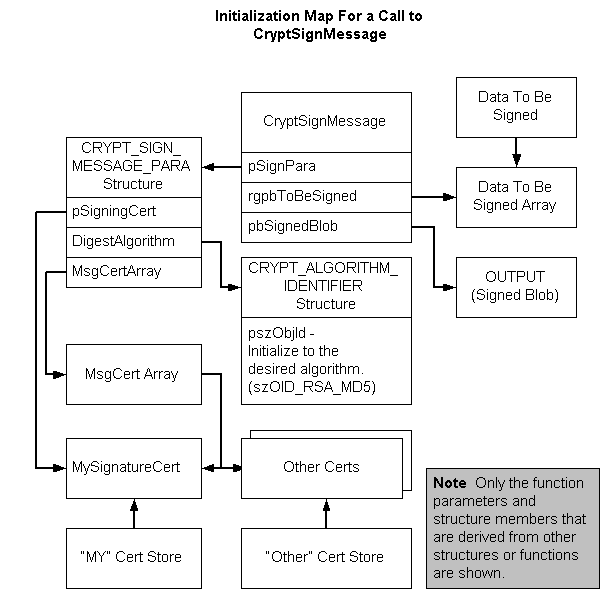

description: Shows the relationship between those function parameters that point to structures or arrays and their initialized data.
ms.assetid: 89caf4d3-727f-472b-9a09-e81b4ff4d127
title: Procedure for Signing Data
ms.topic: article
ms.date: 05/31/2018
Procedure for Signing Data
A single function, CryptSignMessage, performs all of the tasks listed in Creating a Signed Message. However, initialization of structures and other data is still necessary. The following illustration shows the relationship between those function parameters that point to structures or arrays and their initialized data. The illustration shows only the function parameters and structure members that are derived from other structures or functions. The rest of the parameters are straightforward initializations.

To sign data using CryptSignMessage
- Get a pointer to the data that is to be signed.
- Assign the pointer to the data to index zero of a "data to be signed" array.
- Get a handle to the cryptographic provider.
- Open a certificate store that contains the signer's certificate.
- Get an address to the signer's certificate.
- Assign the address of the certificate to the zero index of the MsgCert array.
- Assign the addresses of any other certificates to be included with the message to the MsgCert array.
- Initialize the CRYPT_ALGORITHM_IDENTIFIER structure, initializing the pszObjId member to the desired hash algorithm and the other members as appropriate.
- Initialize the CRYPT_SIGN_MESSAGE_PARA structure, initializing the pSigningCert member to the address of the signer's certificate, the MsgCert array member to the address of the signer's and other's certificates, the HashAlgorithm member to the address of the CRYPT_ALGORITHM_IDENTIFIER structure, and the other members as appropriate.
- Call the CryptSignMessage function, passing the CRYPT_SIGN_MESSAGE_PARA structure for the pSignPara parameter, the address of the "data to be signed" array for the rgpbToBeSigned parameter, an address for the pbSignedBlob output parameter, and values for the other parameters as appropriate.
Â
Â